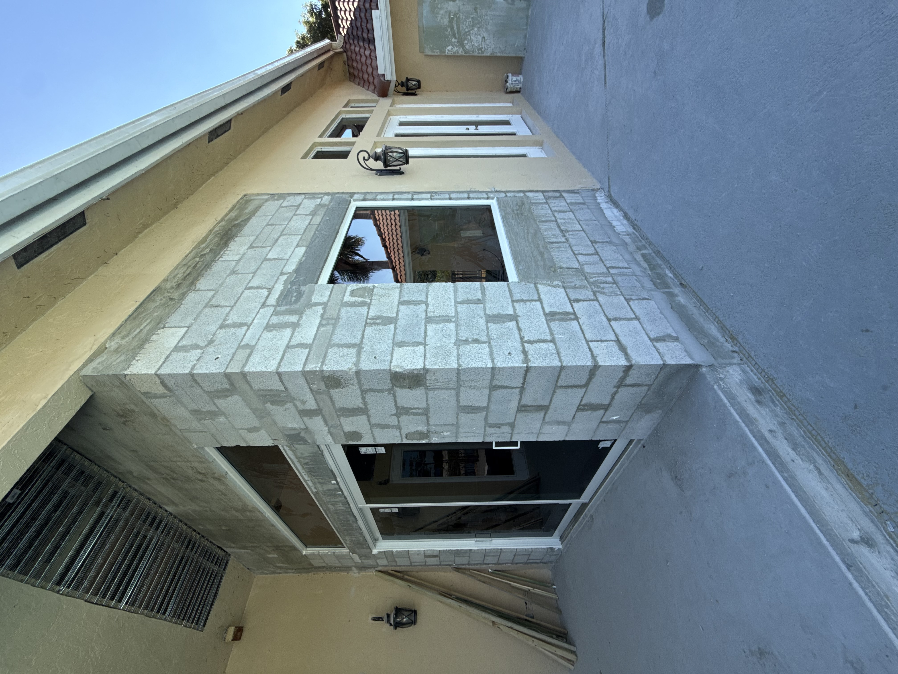

Finished exterior
One-coat stucco fails in Florida salt-air. We do it the slow way: lath, scratch, brown, finish. Scroll to see why every layer matters.
See the coats →
Florida sun + salt-air + sub-tropical humidity wrecks single-coat stucco fast. The 4-coat system is industry standard for a reason.
Three-coat application over metal lath is the minimum required by Florida code. We add the finish coat on top — actual 4 coats.
Photos at lath inspection, scratch cure, brown cure, finish. Insurance + sale-time disclosures love this.


If your stucco quote is 30% cheaper than ours, ask the other guy how many coats they're applying. We'll spend an extra week on lath + cure — and forty more years on the wall.
Back to Stucco Service →